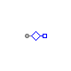
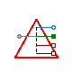
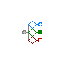

Table of Contents
- User's Guide
- Blocks
- Conditions
- Assemblies
- Regions
- Subregions
- Phases
- Species
- Chemistry
- Connectors
- Characteristics
- Units
- Quantities
- Utilities
- Icons
Download
- Latest: v0.1.2 (2013-12-13)
FCSys.Conditions.Adapters.MSL.Domains
Adapters for physical domainsInformation
Extends from Modelica.Icons.Package (Icon for standard packages).Package Content
| Name | Description |
|---|---|
| Adapter between Modelica.Electrical.Analog and FCSys | |
| Thermal | Adapter between Modelica.Thermal.HeatTransfer and FCSys |
| Fluid | Adapter to connect a single fluid species between FCSys and Modelica |
| FluidNeutral | Adapter to connect a single neutral fluid species between FCSys and Modelica |
 FCSys.Conditions.Adapters.MSL.Domains.Electrical
Adapter between Modelica.Electrical.Analog and FCSys
Information
Assumptions:
- There is no shear force across the interface.
- There is no thermal conduction across the interface.
Parameters
| Type | Name | Default | Description |
|---|---|---|---|
| Material properties | |||
| replaceable package Data | Characteristics.'e-'.Graphite | Characteristic data (for FCSys) | |
Connectors
| Type | Name | Description |
|---|---|---|
| Boundary | boundary | Interface to electrical species |
| NegativePin | pin | Modelica electrical pin |
| Material properties | ||
| replaceable package Data | Characteristic data (for FCSys) | |
Modelica definition
model Electrical "Adapter between Modelica.Electrical.Analog and FCSys" import assert = FCSys.Utilities.assertEval; extends FCSys.Icons.Names.Top1; replaceable package Data = Characteristics.'e-'.Graphite constrainedby Characteristics.BaseClasses.Characteristic "Characteristic data (for FCSys)"; Connectors.Boundary boundary "Interface to electrical species"; Modelica.Electrical.Analog.Interfaces.NegativePin pin "Modelica electrical pin"; initial equation assert(Data.z <> 0, "The species must have charge."); equation // Assumptions boundary.mPhidot = {0,0} "No shear force (assumption #1)"; boundary.Qdot = 0 "No thermal conduction (assumption #2)"; Data.g(boundary.T, boundary.p) = Data.z*pin.v*U.V "Equal potentials (also conservation of energy)"; 0 = boundary.Ndot + pin.i*U.A/Data.z "Conservation of material (also charge), without storage"; end Electrical;
 FCSys.Conditions.Adapters.MSL.Domains.Thermal
FCSys.Conditions.Adapters.MSL.Domains.Thermal
Adapter between Modelica.Thermal.HeatTransfer and FCSys

Information
Extends from FCSys.Icons.Names.Top1.
Connectors
| Type | Name | Description |
|---|---|---|
| ThermalDiffusive | boundary | Connector for thermal diffusion |
| HeatPort_b | heatPort | Modelica heat port |
Modelica definition
model Thermal "Adapter between Modelica.Thermal.HeatTransfer and FCSys" extends FCSys.Icons.Names.Top1; Connectors.ThermalDiffusive boundary "Connector for thermal diffusion"; Modelica.Thermal.HeatTransfer.Interfaces.HeatPort_b heatPort "Modelica heat port"; equation boundary.T = heatPort.T*U.K "Equal temperatures"; 0 = boundary.Qdot + heatPort.Q_flow*U.W "Conservation of energy, without storage"; end Thermal;
 FCSys.Conditions.Adapters.MSL.Domains.Fluid
Adapter to connect a single fluid species between FCSys and Modelica
Information
Assumptions:
- There is no shear force across the interface.
Parameters
| Type | Name | Default | Description |
|---|---|---|---|
| Material properties | |||
| replaceable package Data | Characteristics.BaseClasses…. | Characteristic data (for FCSys) | |
| replaceable package Medium | Modelica.Media.IdealGases.Si… | Medium model (for Modelica) | |
Connectors
| Type | Name | Description |
|---|---|---|
| Boundary | boundary | Connector for material, momentum, and energy of a single species |
| FluidPort_b | fluidPort | Modelica fluid port |
| Flange_a | flange[Orient] | Modelica translational flanges for shear force |
| HeatPort_b | heatPort | Modelica heat port |
| NegativePin | pin | Modelica electrical pin |
| Material properties | ||
| replaceable package Data | Characteristic data (for FCSys) | |
| replaceable package Medium | Medium model (for Modelica) | |
Modelica definition
model Fluid "Adapter to connect a single fluid species between FCSys and Modelica" extends FCSys.Icons.Names.Top3; replaceable package Data = Characteristics.BaseClasses.Characteristic "Characteristic data (for FCSys)"; replaceable package Medium = Modelica.Media.IdealGases.SingleGases.H2O constrainedby Modelica.Media.Interfaces.PartialPureSubstance "Medium model (for Modelica)"; Connectors.Boundary boundary "Connector for material, momentum, and energy of a single species"; Modelica.Fluid.Interfaces.FluidPort_b fluidPort(redeclare final package Medium = Medium) "Modelica fluid port"; Modelica.Mechanics.Translational.Interfaces.Flange_a flange[Orient] "Modelica translational flanges for shear force"; Modelica.Thermal.HeatTransfer.Interfaces.HeatPort_b heatPort "Modelica heat port"; Modelica.Electrical.Analog.Interfaces.NegativePin pin "Modelica electrical pin"; equation // Equal properties boundary.p = fluidPort.p*U.Pa "Pressure"; boundary.phi = der(flange.s)*U.m/U.s "Velocity"; boundary.T = heatPort.T*U.K "Temperature"; Medium.specificEnthalpy_pT(fluidPort.p, heatPort.T) = fluidPort.h_outflow; // Conservation (without storage) 0 = Data.z*boundary.Ndot + pin.i*U.A "Charge"; 0 = boundary.Ndot + (fluidPort.m_flow/Data.m)*U.kg/U.s "Material"; {0,0} = boundary.mPhidot + flange.f*U.N "Transverse translational momentum"; 0 = boundary.Qdot + heatPort.Q_flow*U.W "Energy"; // Note: All of the advective terms (for all the balance equations) // cancel across the interface. end Fluid;
 FCSys.Conditions.Adapters.MSL.Domains.FluidNeutral
Adapter to connect a single neutral fluid species between FCSys and ModelicaInformation
Extends from FCSys.Icons.Names.Top3.
Parameters
| Type | Name | Default | Description |
|---|---|---|---|
| Material properties | |||
| replaceable package Data | Characteristics.BaseClasses…. | Characteristic data (for FCSys) | |
| replaceable package Medium | Modelica.Media.IdealGases.Si… | Medium model (for Modelica) | |
Connectors
| Type | Name | Description |
|---|---|---|
| Boundary | boundary | Connector for material, momentum, and energy of a single species |
| FluidPort_b | fluidPort | Modelica fluid port |
| Flange_a | flange[Orient] | Modelica translational flanges for shear force |
| HeatPort_b | heatPort | Modelica heat port |
| Material properties | ||
| replaceable package Data | Characteristic data (for FCSys) | |
| replaceable package Medium | Medium model (for Modelica) | |
Modelica definition
model FluidNeutral "Adapter to connect a single neutral fluid species between FCSys and Modelica" import assert = FCSys.Utilities.assertEval; extends FCSys.Icons.Names.Top3; replaceable package Data = Characteristics.BaseClasses.Characteristic "Characteristic data (for FCSys)"; replaceable package Medium = Modelica.Media.IdealGases.SingleGases.H2O constrainedby Modelica.Media.Interfaces.PartialPureSubstance "Medium model (for Modelica)"; Connectors.Boundary boundary "Connector for material, momentum, and energy of a single species"; Modelica.Fluid.Interfaces.FluidPort_b fluidPort(redeclare final package Medium = Medium) "Modelica fluid port"; Modelica.Mechanics.Translational.Interfaces.Flange_a flange[Orient] "Modelica translational flanges for shear force"; Modelica.Thermal.HeatTransfer.Interfaces.HeatPort_b heatPort "Modelica heat port"; initial equation assert(Data.z == 0, "The species must be neutral, but its chemical formula is " + Data.formula); equation // Equal properties boundary.p = fluidPort.p*U.Pa "Pressure"; boundary.phi = der(flange.s)*U.m/U.s "Velocity"; boundary.T = heatPort.T*U.K "Temperature"; Medium.specificEnthalpy_pT(fluidPort.p, heatPort.T) = fluidPort.h_outflow; // Conservation (without storage) 0 = boundary.Ndot + (fluidPort.m_flow/Data.m)*U.kg/U.s "Material"; {0,0} = boundary.mPhidot + flange.f*U.N "Translational momentum"; 0 = boundary.Qdot + heatPort.Q_flow*U.W "Energy"; // Note: All of the advective terms (for all the balance equations) // cancel across the interface. end FluidNeutral;